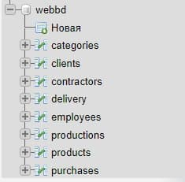
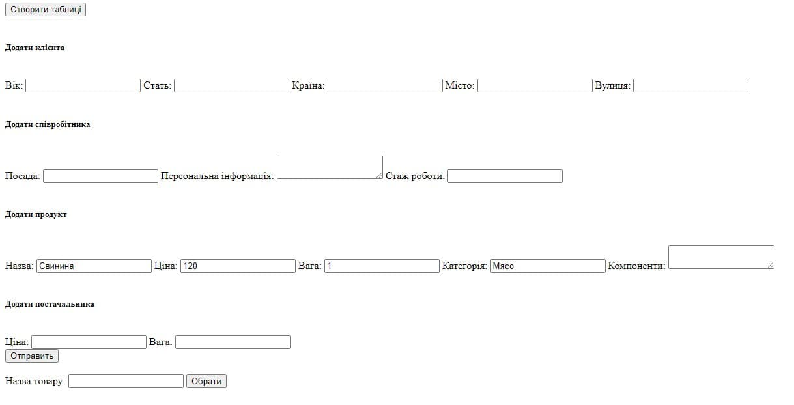
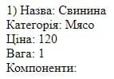
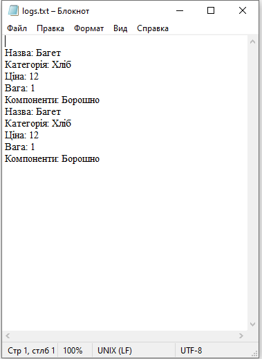

Реалізація БД в СУБД




<?php
if(!empty($_POST['create'])){
if($_POST['create']=="Створити таблиці") cr_tables();
}
if(!empty($_POST['age'])){
add_client();
}
function add_client(){
$age=$_POST["age"];
$gender=$_POST["gender"];
$country=$_POST["country"];
$city=$_POST["city"];
$street=$_POST["street"];
$con=mysqli_connect("localhost", "root", "","webbd") or die("Couldn't Connect") ;
mysqli_set_charset($con, "utf8");
$query="INSERT IGNORE INTO CLIENTS(ID,AGE,GENDER,COUNTRY,CITY,STREET) VALUES (NULL,'$age','$gender','$country','$city','$street')";
mysqli_query($con,$query) or die("Couldn't Insert");
}
if(!empty($_POST['position'])){
add_employee();
}
function add_employee(){
$position=$_POST["position"];
$info=$_POST["info"];
$experience=$_POST["experience"];
$con=mysqli_connect("localhost", "root", "","webbd") or die("Couldn't Connect") ;
mysqli_set_charset($con, "utf8");
$query="INSERT IGNORE INTO EMPLOYEES(ID,POSITION,PERSONAL_INFO,WORK_EXPERIENCE) VALUES (NULL,'$position','$info','$experience')";
mysqli_query($con,$query) or die("Couldn't Insert");
}
if(!empty($_POST['mattype'])){
add_contractor();
}
function add_contractor(){
$type=$_POST["mattype"];
$price=$_POST["kgprice"];
$con=mysqli_connect("localhost", "root", "","webbd") or die("Couldn't Connect") ;
mysqli_set_charset($con, "utf8");
$query="INSERT IGNORE INTO CONTRACTORS(ID,TYPE_OF_RAW_MATERIAL,PRICE_PER_KG) VALUES (NULL,'$type','$price')";
mysqli_query($con,$query) or die("Couldn't Insert");
}
if(!empty($_POST['price'])){
add_product();
}
function add_product(){
$name=$_POST["prodname"];
$price=$_POST["price"];
$weight=$_POST["weight"];
$components=$_POST["components"];
$category=$_POST["category"];
$con=mysqli_connect("localhost", "root", "","webbd") or die("Couldn't Connect") ;
mysqli_set_charset($con, "utf8");
$query="
INSERT IGNORE INTO CATEGORIES(ID,CATEGORY_TYPE) VALUES (NULL,'$category');
INSERT IGNORE INTO PRODUCTS(ID,ID_CATEGORY_TYPE,NAME,PRICE,WEIGHT,COMPONENTS) VALUES (NULL,(SELECT ID FROM CATEGORIES WHERE CATEGORY_TYPE='$category'),'$name','$price','$weight','$components')";
mysqli_multi_query($con,$query) or die("Couldn't Insert");
}
function cr_tables(){
$con=mysqli_connect("localhost", "root", "","webbd") or die("Couldn't Connect") ;
mysqli_set_charset($con, "utf8");
echo 'Connected!';
$query = "
CREATE TABLE CLIENTS
(
ID INT(6) UNSIGNED AUTO_INCREMENT PRIMARY KEY,
AGE INT(3),
GENDER INT(1) DEFAULT 0 NOT NULL,
COUNTRY VARCHAR(32) NOT NULL,
CITY VARCHAR(32) NOT NULL,
STREET VARCHAR(32)
);
CREATE TABLE EMPLOYEES
(
ID INT(6) UNSIGNED AUTO_INCREMENT PRIMARY KEY,
POSITION varchar(32) NOT NULL,
PERSONAL_INFO varchar(64) NOT NULL,
WORK_EXPERIENCE INT(2) NOT NULL
);
CREATE TABLE CONTRACTORS
(
ID INT(6) UNSIGNED AUTO_INCREMENT PRIMARY KEY,
TYPE_OF_RAW_MATERIAL varchar(32) NOT NULL,
PRICE_PER_KG INT(10) NOT NULL
);
CREATE TABLE CATEGORIES
(
ID INT(6) UNSIGNED AUTO_INCREMENT PRIMARY KEY,
CATEGORY_TYPE varchar(32) NOT NULL
);
CREATE TABLE PRODUCTS
(
ID INT(6) UNSIGNED AUTO_INCREMENT PRIMARY KEY,
ID_CATEGORY_TYPE INT(6) NOT NULL,
NAME varchar(15),
PRICE INT(10) NOT NULL,
WEIGHT INT(5) NOT NULL,
COMPONENTS varchar(64),
FOREIGN KEY (ID_CATEGORY_TYPE) REFERENCES CATEGORIES(ID)
);
CREATE TABLE PRODUCTIONS
(
ID INT(6) UNSIGNED AUTO_INCREMENT PRIMARY KEY,
ID_EMPLOYEE INT(6) NOT NULL,
ID_PRODUCT INT(6) NOT NULL,
COUNT INT(6) NOT NULL,
FOREIGN KEY (ID_EMPLOYEE) REFERENCES EMPLOYEES(ID),
FOREIGN KEY (ID_PRODUCT) REFERENCES PRODUCTS(ID)
);
CREATE TABLE PURCHASES
(
ID INT(6) UNSIGNED AUTO_INCREMENT PRIMARY KEY,
ID_CLIENT INT(6) NOT NULL,
ID_PRODUCT INT(6) NOT NULL,
ID_EMPLOYEE INT(6) NOT NULL,
WEIGHT INT(5) NOT NULL,
PRICE INT(10) NOT NULL,
FOREIGN KEY (ID_CLIENT) REFERENCES CLIENTS(ID),
FOREIGN KEY (ID_PRODUCT) REFERENCES PRODUCTS(ID),
FOREIGN KEY (ID_EMPLOYEE) REFERENCES EMPLOYEES(ID)
);
CREATE TABLE DELIVERY
(
ID INT(6) UNSIGNED AUTO_INCREMENT PRIMARY KEY,
ID_CONTRACTOR INT(6) NOT NULL,
ID_EMPLOYEE INT(6) NOT NULL,
COUNT_PRODUCT INT(10) NOT NULL,
DATE_CREATION DATE,
FOREIGN KEY (ID_CONTRACTOR) REFERENCES CONTRACTORS(ID),
FOREIGN KEY (ID_EMPLOYEE) REFERENCES EMPLOYEES(ID)
);
";
if (mysqli_multi_query ($con, $query)) {
echo "All Tables Created Successfully";
} else {
echo "Error creating table: " . mysqli_error($con);
}
}
if(!empty($_POST['select'])){
if($_POST['select']=="Обрати") select();
}
function select(){
$con=mysqli_connect("localhost", "root", "","webbd") or die("Couldn't Connect") ;
mysqli_set_charset($con, "utf8");
$name=$_POST['itname'];
$query="SELECT
CATEGORIES.CATEGORY_TYPE AS 'Категорія',PRODUCTS.NAME as 'Назва', PRODUCTS.PRICE AS 'Ціна', PRODUCTS.WEIGHT AS 'Вага', PRODUCTS.COMPONENTS AS 'Компоненти' FROM CATEGORIES,PRODUCTS WHERE PRODUCTS.ID_CATEGORY_TYPE=CATEGORIES.ID AND PRODUCTS.NAME = '$name';
";
$result= mysqli_query($con,$query) or die("Couldn't Select");
if (mysqli_num_rows($result) > 0) {
$counter=1;
while($row = mysqli_fetch_assoc($result)) {
echo $counter.") Назва: " . $row["Назва"]. "<br>Категорія: " . $row["Категорія"]. "<br>Ціна: " . $row["Ціна"]."<br>Вага: ". $row["Вага"]."<br>Компоненти: ". $row["Компоненти"]. "<br><br>";
$fd = fopen("logs.txt", 'a') or die("не удалось создать файл");
$str = "\nНазва: " . $row["Назва"]. "\nКатегорія: " . $row["Категорія"]. "\nЦіна: " . $row["Ціна"]."\nВага: ". $row["Вага"]."\nКомпоненти: ". $row["Компоненти"]. "";
fwrite($fd, $str);
}
}
else{
echo "За вашим запитом товарів не знайдено";
}
}
?>
file(bd.php)